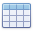
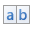
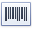
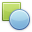
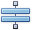
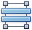
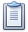
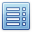
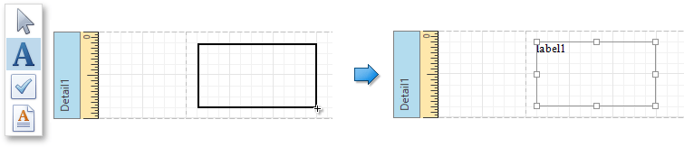

Control Toolbox
The Control Toolbox contains all available report controls and allows end-users to add them to the report being edited. Report controls can display both static and dynamic information of different kinds (simple or formatted text, pictures, tables, etc.) and adjust a report layout (organize controls within panels, insert page brakes, etc.)
The available report controls can be divided into the following categories.
To learn how to add a control from the Toolbox to a report, see the Adding Controls to a Report section.
General Content
The following controls are most commonly used to display data in a report.
| Icon | Control Name |
|---|---|
| Label | |
| Check Box | |
| Rich Text | |
| Picture Box | |
|  | Table |
|  | Character Comb |
|  | Barcode |
| Zip Code | |
| Gauge |
Extended Data
The following controls are connected to data individually, without accessing a report's data source.
| Icon | Control Name |
|---|---|
| Chart | |
| Pivot Grid | |
| Sparkline |
Report Layout
The following controls allow you to draw shapes in a report and customize the report layout.
| Icon | Control Name |
|---|---|
| Line | |
|  | Shape |
| Page Break | |
|  | Cross-Band Line |
|  | Cross-Band Box |
| Panel | |
|  | Subreport |
Document Statistics
The dynamic content of the following controls is not obtained from a data source.
| Icon | Control Name |
|---|---|
| Page Info | |
|  | Table Of Contents |
Adding Controls to a Report
To add a control from the Toolbox to a report, do one of the following.
Double-click an item in the Toolbox to create the corresponding control at the default position.
Drag-and-drop an item from the Toolbox onto the required position within a report.

Select an item in the Toolbox, and then indicate the bounding rectangle by holding down the left mouse button.

If you need to perform selection, re-arranging or resizing operations, select the Pointer item ().